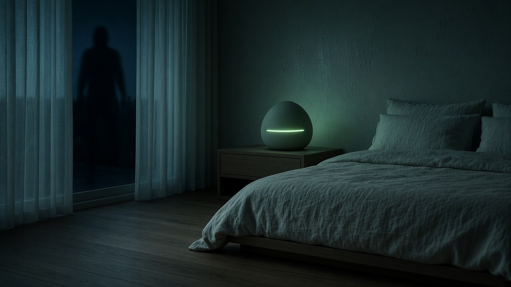
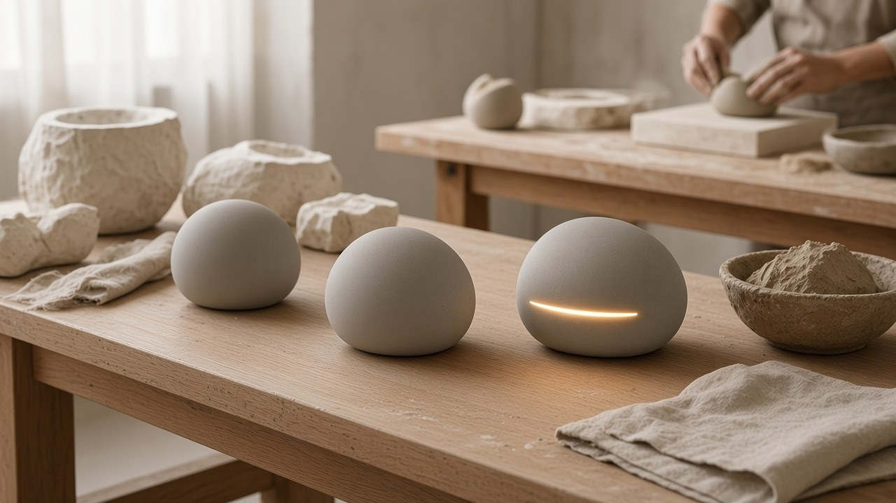
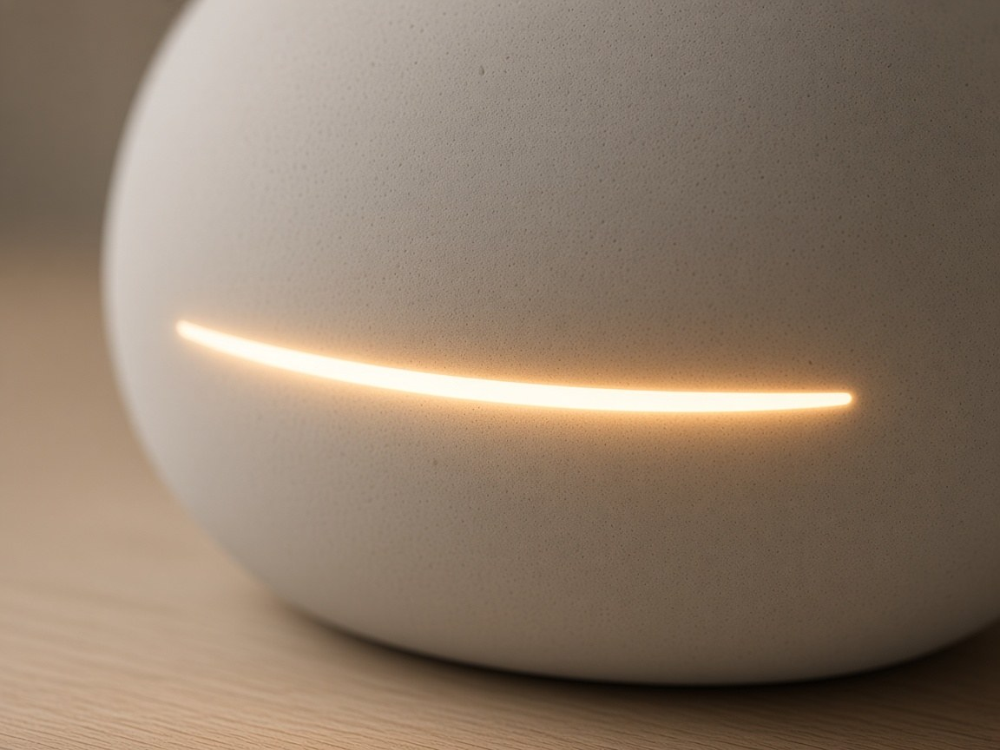
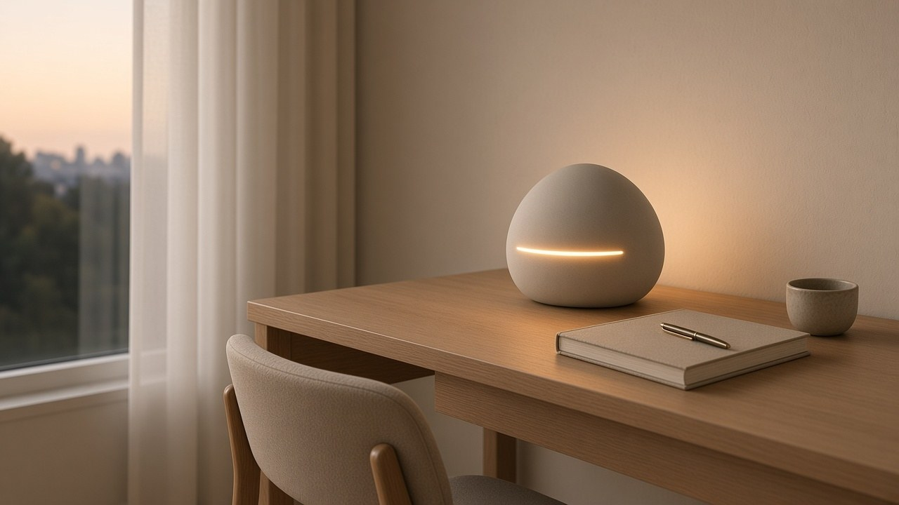
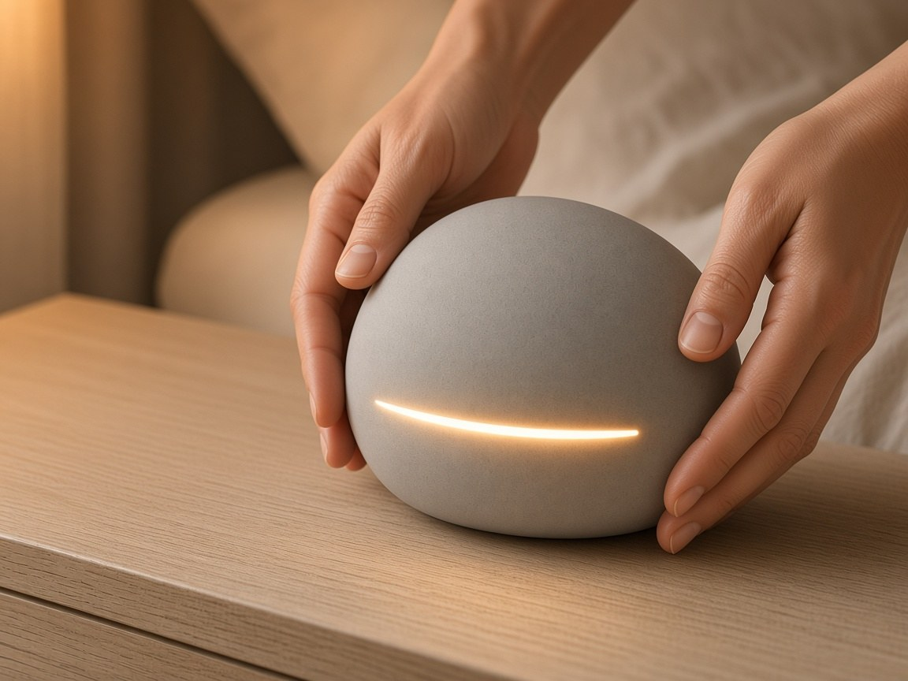
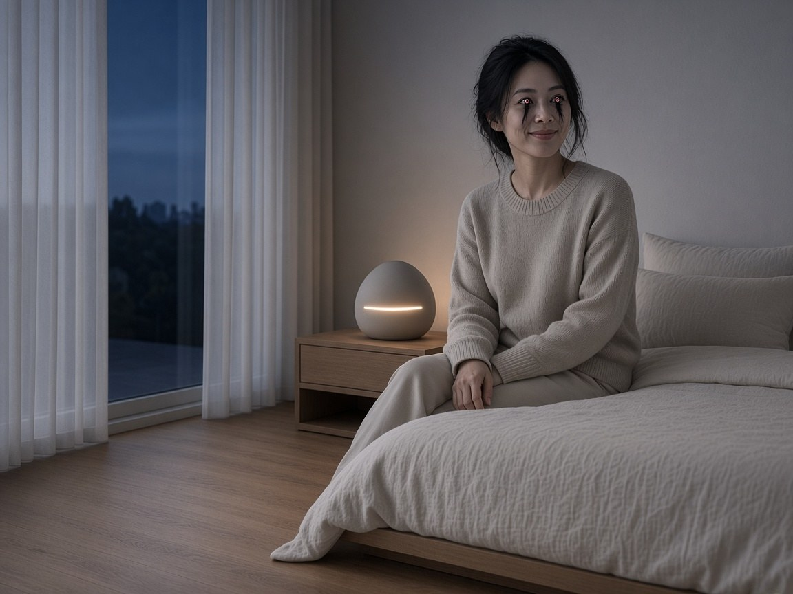
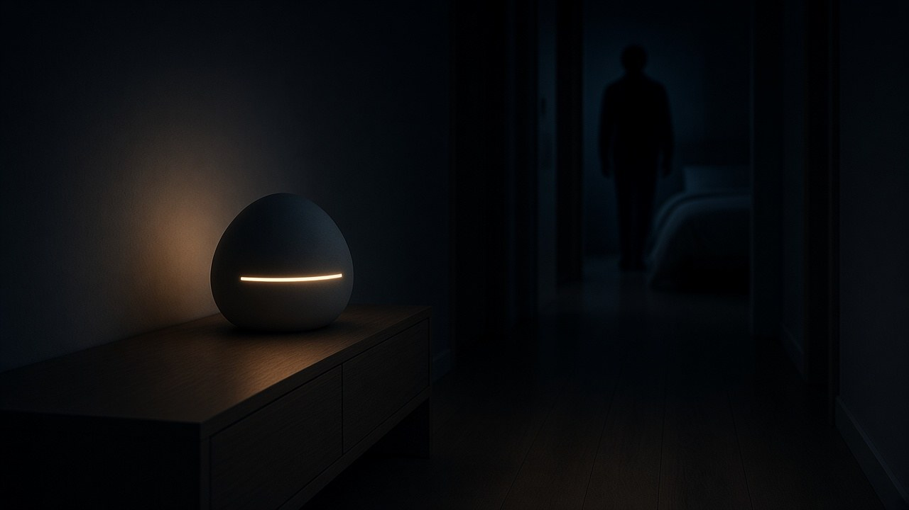
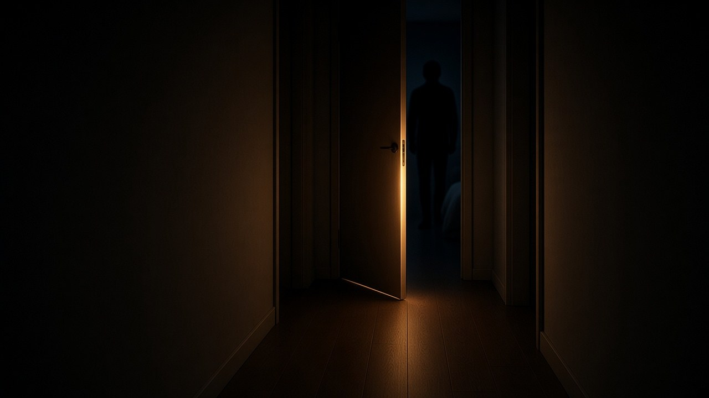

节律光谱
减去扰眠的短波蓝光，色温在 1800K 至 2700K 之间缓慢过渡。它不叫醒你，只是陪着你。
门还开着



PRODUCT
夜间安光
大多数夜灯只是把白昼延长。澄栖 N1 相反：它让暗成为一个可以停留的地方。
一体成型的陶瓷壳体里，只有一条细光。没有指示灯，没有屏幕，没有需要你学习的模式。你走进黑夜，它自己会决定亮到哪里。

THE HOUSE
澄栖始于一个很普通的夜晚。我们在自己家里起身，摸到开关的瞬间，房间被瞬间推回白昼。那不是光的问题，是秩序被打扰了。
后来的两年里，我们把这个问题带回工房。走访陶瓷作坊，试过玻璃、金属与石材，最后留下一枚没有接缝的壳，和一条只有两毫米宽的光。澄栖二字，是我们给自己的约定：在夜里，把人好好安放。
每一枚 N1 仍在杭州近郊的工房完成终检。烧成、修坯、校光，都由同一组人经手。我们宁可做得慢一些。
CRAFT & SPECTRUM

壳体以高温素烧陶瓷一体成型，手感接近未上釉的石头：温润、沉，并会慢慢带上室温。它没有按钮，也没有需要擦亮的涂层。唯一的开口，是那条被反复校过的细缝。
N1 的色温在 1800K 至 2700K 之间缓慢过渡，并减去扰眠的短波蓝光。它不为把房间照得像白天，只为让你看清脚下，同时让眼睛仍停留在夜晚该有的节律里。
光在腔体内先被混合，再从细缝送出，因此边缘柔和，几乎看不到灯珠的存在。亮度会随环境与人的停留自动收束，你不必去学习任何模式。
DESIGN
减去扰眠的短波蓝光，色温在 1800K 至 2700K 之间缓慢过渡。它不叫醒你，只是陪着你。

人体与环境感知在极低功耗下持续工作。起夜时，光先出现在地面，而不是眼前。回到床上，它会在你重新躺下之前熄掉。

工作噪音低于 16 分贝，比大多数人的呼吸更轻。澄栖相信，真正的安静里不该有机器的存在感。
AT HOME

《居间》十一月刊
「如果一盏灯需要说明书，它大概还不够安静。」
主创设计师周衡把这句话写在工房墙边的一张便条上。探访那天是午后，北向的窗口很亮，长桌上并排放着尚未开缝的素坯，和一枚已经亮着的 N1。差别只在一条光。周衡说，他们把前三年里做过的二十二个方案几乎全部否决了，不是因为不够亮，而是因为仍然太像「一盏灯」。
澄栖选择陶瓷，并非为了显得更像器物，而是因为这种材料会吸收温度，也愿意把光在内部先完成混合。「金属太锋利，玻璃太透明。夜晚需要的是一种不提醒你的存在。」校准光谱的工作被他形容得更平淡：反复对比色卡，请同事在夜里走同一段走廊，问的不是「看见了吗」，而是「有没有被叫醒」。
离开前，我们问，澄栖要做的是不是一款更克制的消费品。周衡想了想，摇头：「我们只是希望，人在自己家里，还能把夜晚过完。」
STORIES
林唯 · 上海
以前起夜要摸开关，一下子全亮。家里另外两个人也会被吵醒。换上 N1 之后，只有脚边有一层很薄的光，回床上又暗下去。连续用了两个月，我觉得家里终于像夜里该有的样子。
光谱很稳，不像普通暖光灯那样发闷。连续用了三个星期，入睡比以前快，也没有半夜被指示灯刺醒的问题。
设计很克制，放在床头也不抢。双栖套装把走廊和卧室接上之后，夜间走路变得很顺，几乎感觉不到灯在切换。
我把它放在书桌，晚上处理未写完的信。光线只够看清纸面，窗外的夜还在，这个分寸拿得很准。
壳体比想象中沉一点，放下去就很安定。客人来家里，常常要摸一摸，问这是不是一件器物，而不是灯。
SPECIFICATIONS
| 澄栖 N1 | 常见夜灯 | |
|---|---|---|
| 色温 | 1800K—2700K 自动过渡 | 多为固定 4000K 以上，或简单暖白 |
| 短波蓝光 | 已做节律校准，减去扰眠波段 | 通常不单独处理 |
| 工作噪音 | < 16 dB | 风扇或变压器底噪可被听见 |
| 控制 | 无屏幕、无指示灯、无模式需要学习 | 按钮、遥控或手机应用 |
| 感应 | 起夜先照足下，躺下后自动收束 | 常为常亮，或延迟关闭不够自然 |
| 壳体 | 高温素烧陶瓷，一体成型 | 塑料或不锈钢拼接 |

CARE
床头、书桌或走廊转角均可。请让感应朝向你夜间经过的路径，距离地面约 40 至 80 厘米时，足下光最自然。
使用干燥的软布轻轻擦拭即可。不要浸水，也不要使用带研磨颗粒的清洁剂，以免伤到素烧表面。
内置电池与隐藏触点底座配合使用。一次满电可支持数周的夜间感应；底座可长期轻触充电，无需每次拔插。
FAQ
它的亮度是为起夜与临睡阅读准备的，不足以把房间变成白昼。若你需要在夜里长时间伏案，建议把它放在书桌近旁，让光落在纸面上，而不是顶亮整个空间。
可以。将灯在底座上停留约八秒，即可进入低亮常驻；再同样操作一次，会回到感应。我们仍然建议在卧室使用感应，以保持夜晚的完整。
色温由环境与时间自动过渡，不能也不需要用旋钮去「选一个更黄的档」。这是刻意的：少一个决定，夜晚就少一次被打断。
两枚 N1 会在近距离内协同：当你从走廊走向卧室，光会在足下交接，而不是同时亮起。开箱后按说明完成一次配对即可，之后无需再设置。
N1 提供两年保修，覆盖光源、感应与充电模块。等候名单开放后，我们将按批次发货，并在发货前三个工作日写信通知。陶瓷壳体如在运输中出现损伤，由澄栖负责补寄。
可以。N1 体积不大，建议连同底座放入原包装。到了新的房间，给它一两个夜晚熟悉路径，感应就会重新稳定。

CHENGQI SPACE
我们在杭州设有一处很小的空间，用于静静地看灯，而不是浏览货架。每月两个开放日，需要提前预约。确认之后，我们会另行告知当次的参观安排。
此为演示表单，不会向服务器提交信息。
已记下你的预约。我们会在开放日前写信。
ORDER
N1 现已开放等候名单。发售时，我们只会写信通知你一次。
单灯。床头、书桌或走廊，一处便够。
卧室与走廊成对配置，光会先在足下衔接。
光谱校准与夜间场景，按年为夜晚做一次微调。
WAITLIST
此为演示表单，不会向服务器提交信息。
已记下。夜还很长。
AT HOME
安静。


NOTES
第一版 N1 的光还是偏高了一点。我们在工房里把同一段走廊走了一百多次，把细缝的开口从三毫米收到两毫米，又把腔体内的反射层改薄。变化很小，但走完那段路的人会说：这回，眼睛没有被提起。
安静来自省略。省略说明书里的第三种模式，省略常亮的状态灯，省略你本来不必做的选择。把这些拿掉之后，剩下的才接近夜晚本身。
我们后来把这句话写在包装的内页：光，只亮到恰好。
AFTER A WHILE
有一天我半夜醒来，灯已经先亮了。大概是感应比我自己更早察觉到翻身。
用到第四周，已经很少再想起它。这大概就是我们要的效果。
我把它从书桌移到走廊。路径一熟，灯光交接就不再被注意了。
LIVING WITH N1
许多人会在第一周留意到，N1 的光总是比脚步更早出现。那是感应，不是预知。把灯放在你通常起夜会经过的地方即可。


把夜晚还给安静
我们看到你了
灯还亮着。门没有锁。你还在往下。
安静
它比你更早到达走廊。
不要停 不要停 不要停
她一直看着门口。
澄栖


夜还很长。
灯，已经不必亮了。